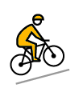
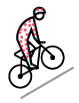
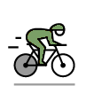
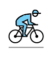

Selectionnez afin de découvrir les différents vainqueurs.
Résultats
Vainqueur

Top grimpeur

Top sprinter

Meilleur jeune

Statistiques
Nombres d'étapes
12
Vitesse moyenne
Notes et références
Vitesse moyenne du vainqueur du Tour. Source : Coll., Tour de France, 100 ans, Paris, L'Équipe, 2003, 3 tomes.
Victoire sur tapis vert prononcée le 2 décembre 1904 (plus de quatre mois après l’arrivée) à la suite du déclassement pour triche des quatre premiers du classement (Maurice Garin qui était premier, Lucien Pothier, César Garin et Hippolyte Aucouturier).
Le Danois Bjarne Riis, de l'équipe Telekom, est retiré du palmarès sur le site letour.fr le 7 juin 2007, après qu'il a avoué avoir pris de l'EPO. Mais finalement, le 4 juillet 2008, en reconnaissance de ces aveux, son nom est remis par les organisateurs du Tour de France sur la liste des vainqueurs, avec sous son nom mention de ses aveux de dopage, cf. cet article de Sport24.com.
Titre de Lance Armstrong révoqué par l'UCI le 22 octobre 2012 pour dopage.
« Sept éditions sans vainqueur » sur lequipe.fr, 26 octobre 2012 (consulté le 26 octobre 2012)
Victoire attribuée a posteriori, après la disqualification de Floyd Landis contrôlé positif à la testostérone lors du Tour.
Bernhard Kohl est déclassé de ce prix pour dopage. Selon le règlement antidopage alors en vigueur, l'UCI réattribue le prix à Sastre même si le Tour de France le laisse sans vainqueur dans sa documentation.
Franco Pellizotti est déclassé de ce prix pour violation des règles antidopages. Selon le règlement antidopage alors en vigueur, l'UCI réattribue le prix à Martínez même si le Tour de France le laisse sans vainqueur dans sa documentation.
Romain Bonte, « Contador suspendu deux ans » sur France Télévisions Sport 6 février 2012 (consulté le 6 février 2012)
a et b « 10 anecdotes sur le Tour de France » linternaute.com, juillet 2007.
Les 10 et 80 étaient respectivement les numéros de dossard d’Odile Defraye en 1912 et de Roger Walkowiak en 1956, ce sont des numéros de dossard qui ne sont actuellement plus attribués, chaque équipe étant constituée de neuf coureurs, l’organisation n’attribue plus de dossard avec un numéro ayant un zéro en dernière position.